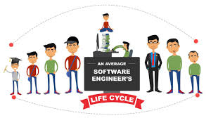

TEAM WORK
PROFFESSION
INFO. COLLECTION
Every step of my career has been a testament to growth, learning, and passion. It all began with a deep curiosity about graghic design, composing articles, designing blogs and many others, which led me to start website development which was my first experience. What started as a small project quickly evolved into a full-fledged pursuit, and I realized I was on the path to something meaningful.
Through the years, I’ve faced challenges that tested my skills and determination. There were moments of doubt, but every obstacle was an opportunity to grow. Each project, whether big or small, taught me something new about myself, my craft, and the importance of resilience. I was fortunate to work with incredible mentors, collaborate with talented teams, and learn from my clients, all of which shaped the professional I am today.